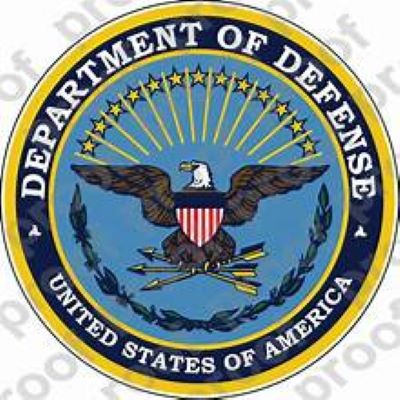
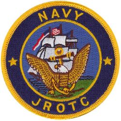

welcome to PVAMU
PRAIRIE VIEW A&M UNIVERSITY is the second-oldest public institution of higher education in the state of Texas. It is a historically black college/university that, since its inception in 1876, has opened its doors to any and every person - inside and outside of Texas - seeking a first-class, four-year university experience.
The university has over 50 buildings on 1440-acres and is situated in a rural part of Texas on one of the most beautiful campuses in the country. beyond its academic institution, it is enclosed brimming with military programs, organizations, Clubs, and many others. for more information visit: Prairie View A&M University
welcome to ROTC

The Reserve Officers' Training Corps (ROTC) is a college program offered at more than 1,700 colleges and universities across the United States that prepares young adults to become officers in the U.S. Military. In exchange for a paid college education and a guaranteed post-college career, participants, or cadets, commit to serve in the Military after graduation. Each Service branch has its own take on ROTC.
for more information please visit Website: todaysmilitary.com
- ARMY ROTC
- NAVY ROTC
- MARINE ROTC
Army ROTC is one of the most demanding and successful leadership programs in the country. The training a student receives in Army ROTC provides leadership development, military skills and career training. Courses take place both in the classroom and in the field, and are mixed with normal academic studies. Additional summer programs, such as Jump School, may also be attended. Upon completion, an Army ROTC graduate is commissioned as an officer in the Army.
To get more information about the ARMY ROTC program, Please visit: ARMY ROTC

As the single largest source of Navy officers, the Navy ROTC program plays an important role in preparing young adults for leadership and management positions in the increasingly technical Navy. Offered at 77 leading colleges and universities throughout the United States, Navy ROTC offers a mixture of military training and normal academic study. Courses take place both in the classroom and in the field. Upon completion, an NROTC graduate is commissioned as an officer and has the ability to choose an officer career in surface warfare, naval aviation, submarine warfare or special warfare. Aspiring Marine Corps officers can also participate in Navy ROTC. The ROTC academic curriculum for a Marine Corps–option student requires classes in national security policy and the history of American military affairs, in addition to the regular academic requirements for the student's degree
To get more information please visit: NAVY ROTC
ORGANIZATION AT PVAMU
Student Organizations provide an essential path for the growth and development of it members. The university greatly benefits from the energy and vitality these organizations give to campus life.
Advisors Guide Here
Fraternities and Sororities: The National Pan-Hellenic Council of Greek-lettered organizations provides opportunities for students to develop leadership and organizational skills. Its members have a chance to make lasting friendships while participating in various campus activities and community services. Freshmen are not eligible for membership.
There are plenty of organizations at Prairie View A@M University distributed in several groups:
- Area of study
- Dance, music, and modeling
- Sport
- Service
- Student Empowerment
- Faith-Based
- Greek letter Organization (social and Academic)
- Recreation
For more information, please visit: Prairie View A&M Universiew/organization
CLUBS
 PVAMU currently has:
PVAMU currently has:
- Men's & Women's rugby
- Tennis
- women's volleyball
- men's soccer
- men's & women's basketball
- power-lifting
- gaming
For more information, please visit: Prairie View A&M Universiew/clubs